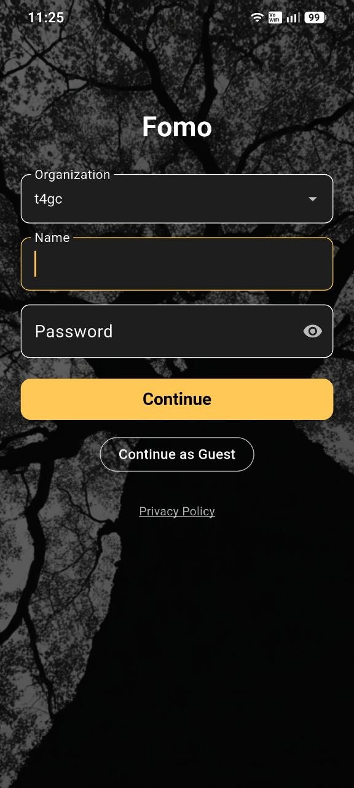
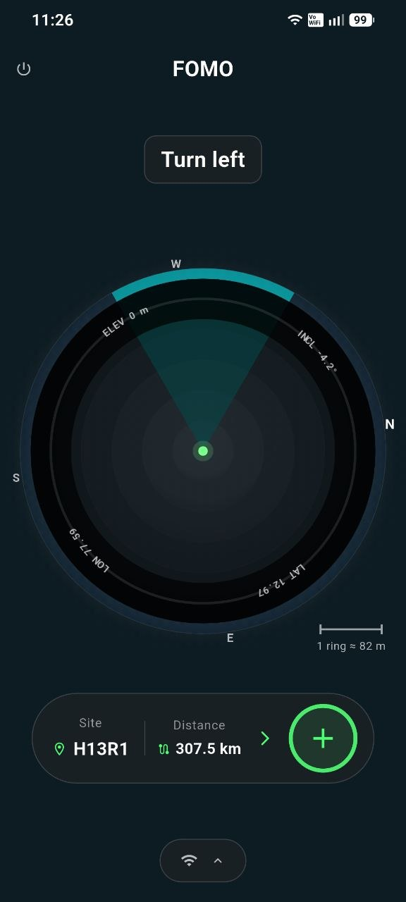
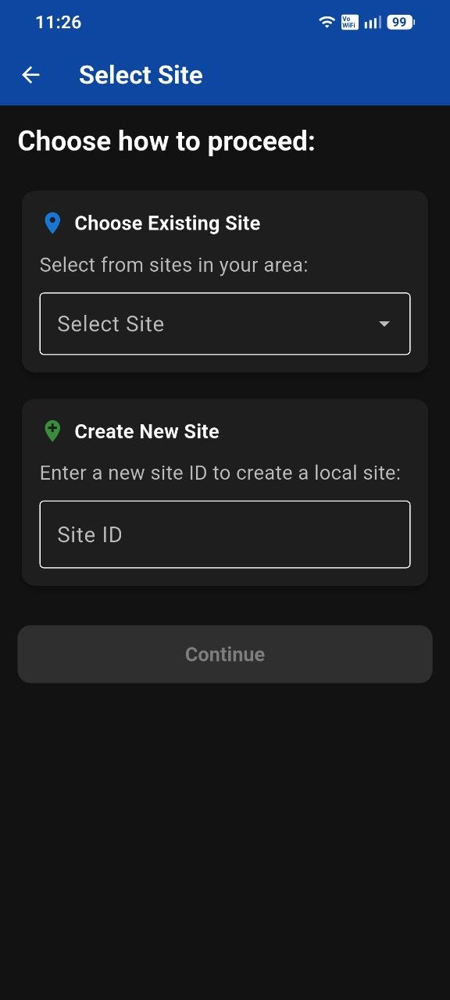
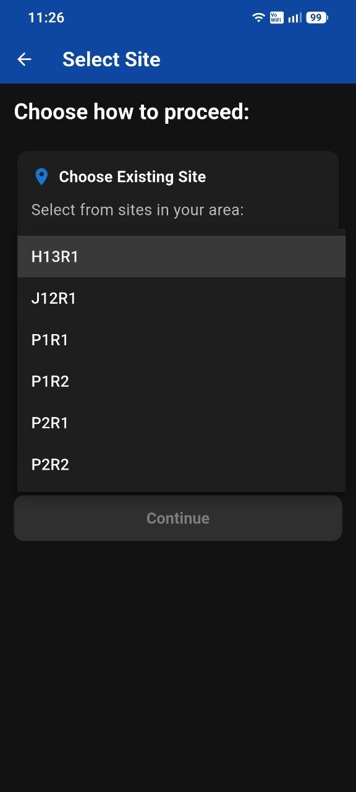
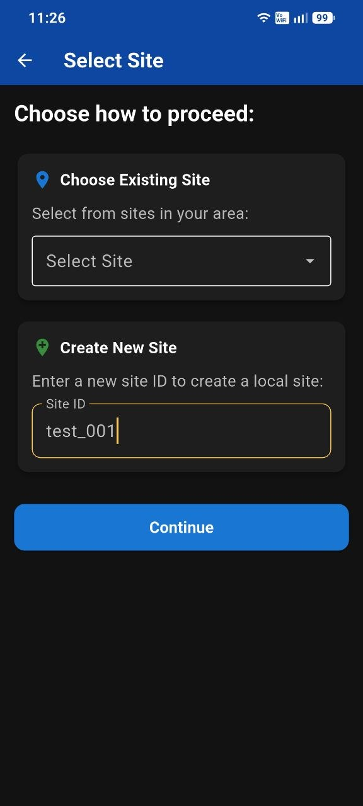
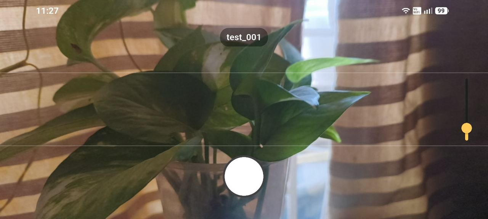
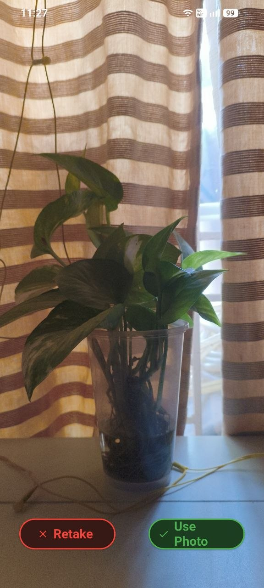
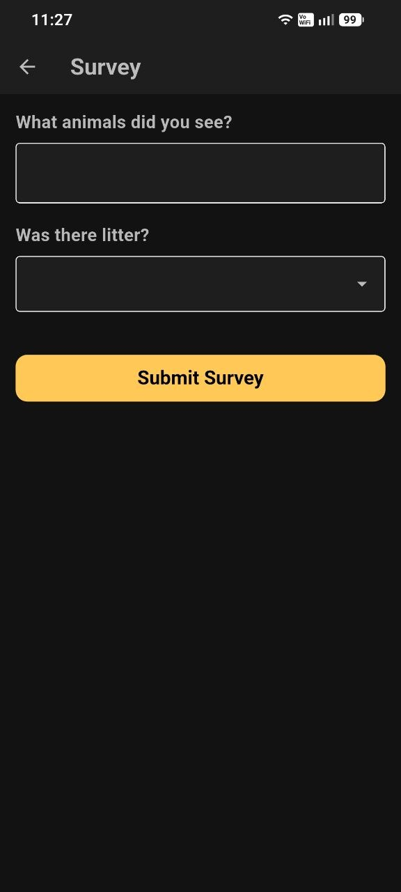
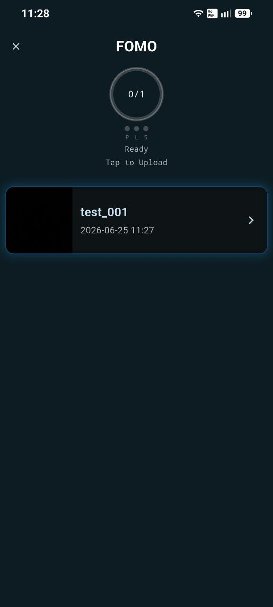
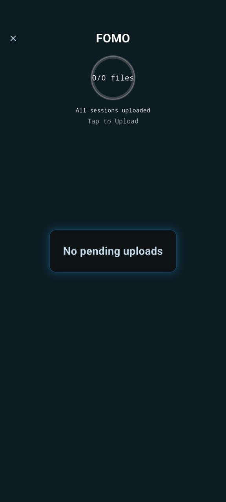

Confirm the site
Make sure the site ID on the home and capture screens is correct before taking photos.
Open the app and sign in with your assigned organisation account. A short loading step then prepares site data for offline use before the home screen appears.
No account? Tap Continue as Guest to skip sign-in for field testing. The Privacy Policy link at the bottom of the screen opens the full policy in a dialog.

The home screen shows your position on a radar-style map alongside nearby site markers. Follow the route advisory to walk toward a site, then start a capture session with the plus button.
Tap the wifi / arrow button at the bottom of the screen to open the upload queue. The power icon in the top-left corner signs you out.

This screen appears when you tap the plus button while not within range of an existing site. Pick a known site or create a new local site before capturing.
New sites are saved locally using your current GPS position. Use the same site ID format as your project team so captured sessions match during upload and review.



Each session needs a portrait photo and a landscape photo. A faint reference (ghost) image and gridlines help you frame the shot. After each capture you can review the photo before saving it.
The flash is off by default and focus is set to auto. If the camera cannot start, check that camera permission is granted for the app.


After both photos are accepted, complete the short survey so the field session includes the required observations. The questions shown depend on the selected site.
If a site has no survey questions configured, this step is skipped automatically and the session is saved right after the landscape photo is accepted.

Open the upload queue from the wifi button on the home screen. Saved sessions appear here and upload when you have a stable connection.
If the dial shows No Network, move to an area with connectivity and tap again. After sessions finish uploading, the app syncs site metadata automatically; if that sync is pending, the dial shows Sync Metadata. On a failed upload, tap Tap to Retry.


Use these checks before leaving a site.
Make sure the site ID on the home and capture screens is correct before taking photos.
Align the ghost overlay and orientation dial so repeat photos are comparable over time.
Use Retake whenever the subject is blurry, blocked, or poorly framed.
Open the upload queue after field work and clear any pending sessions before finishing.
If the dial shows No Network or Tap to Retry, reconnect and tap again to finish.
Location access is required for site matching. If prompted, grant permission and enable location services.